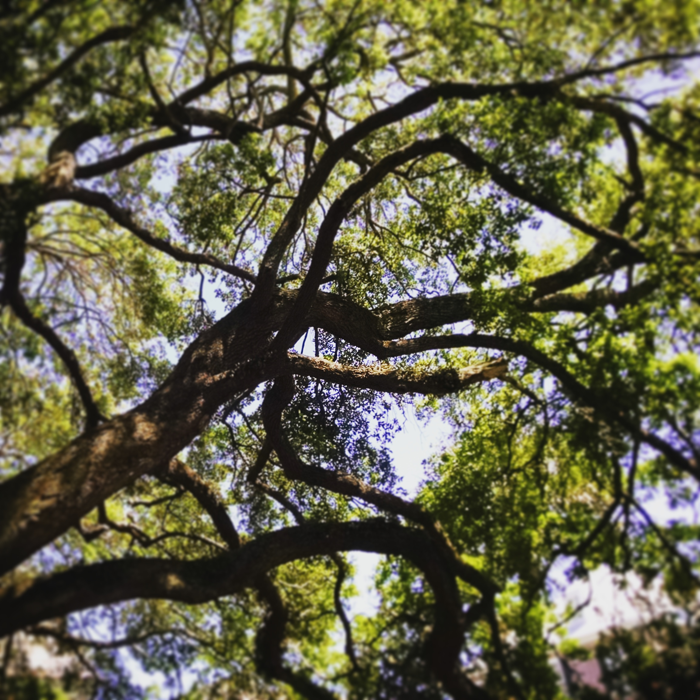
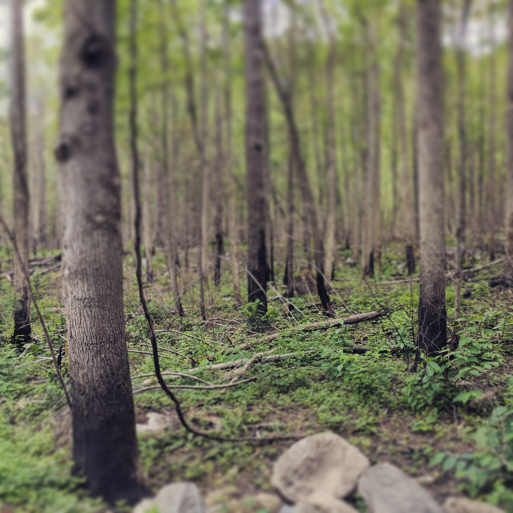

Canopy structure, an ecosystem feature that can be broadly characterized using remote sensing technologies,is a well-established determinant of forest carbon storage, with the quantity of canopy leaves a universal predictor of carbon storage. But the arrangement of leaves in the canopy, rather than just the volume, may provide unique, complementary information about the underlying biological controls on forest carbon storage. Thus, coordinated measurements of both leaf quantity and arrangement within the canopies of a diverse array of forests may lead to substantially improved modeled estimates of carbon storage by the Nation’s forests. My work uses sites from the National Ecological Observatory Network (NEON) to evaluate whether canopy structural complexity, or the spatial variability in leaf arrangement within a canopy, is a global predictor of forest carbon storage within and across sites varying in physical structure, species composition and diversity, and climate.

I am also working with a team of core researchers focused on assessing how forest structure changes with moderate disturbance (e.g. ice, fire, insects, pathogens) across an array of sites including Hubbard Brook Experimental Forest, University of Michigan Biological Station, and the Great Smoky Mountains National Park.
Hubbard Brook Experimental Forest Ice Storm Experiment
University of Michigan Biological Station
I have also worked with the Shenandoah Watershed Study and Virginia Trout Stream Sensitivity Study, a monitoring and research program focused on understanding the biogeochemistry of mountain headwater streams in Virginia, West Virginia, and Maryland–including Shenandoah National Park and other public lands.
Copyright © 2017 All rights reserved.